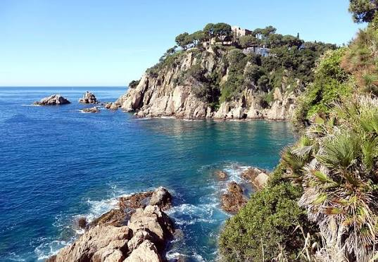

Nuestra historia
Fundada a finales del siglo XIX, Puerto Aurora es una pintoresca ciudad ficticia ubicada en la costa argentina. Nació como un pequeño asentamiento pesquero y, con el paso de las décadas, se convirtió en un referente del turismo regional y la actividad portuaria....
Su identidad se define por una combinación única de tradición marítima, conservación natural y una intensa vida cultural que atrae a visitantes durante todo el año...
